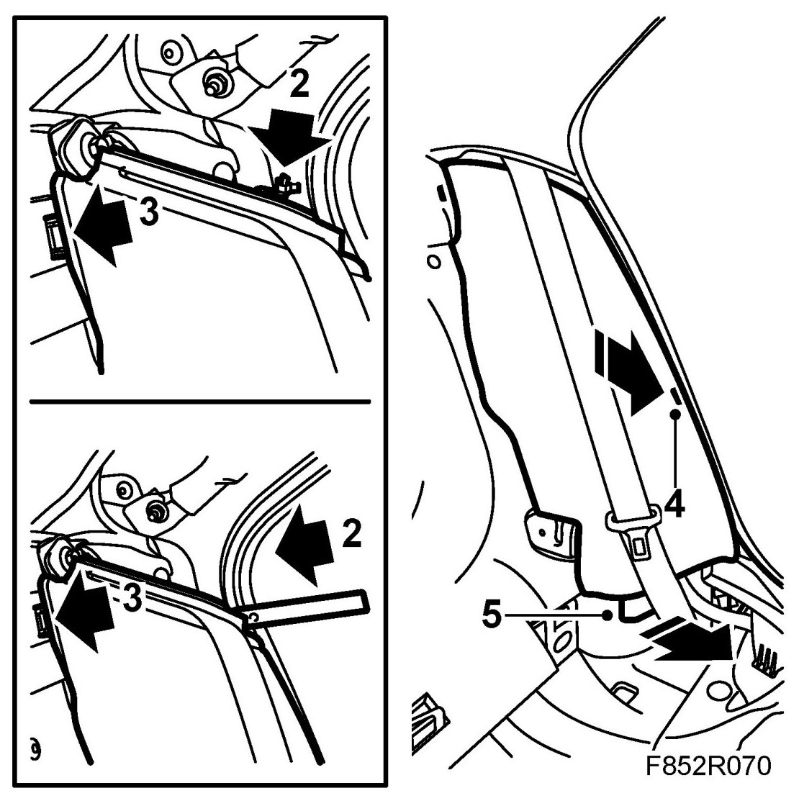
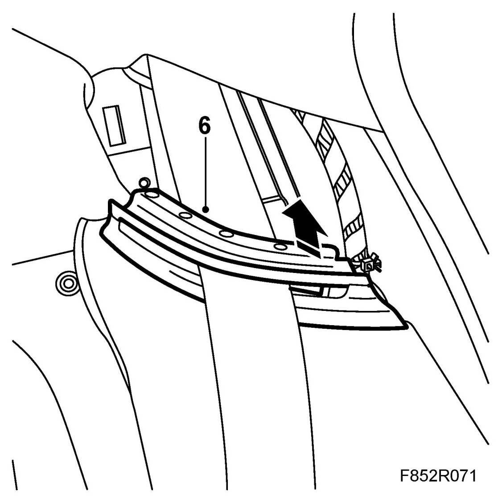
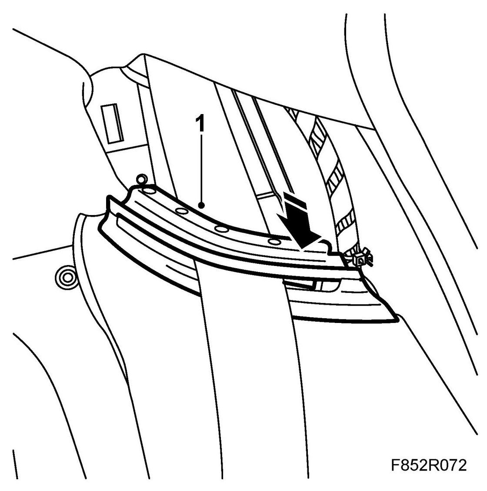
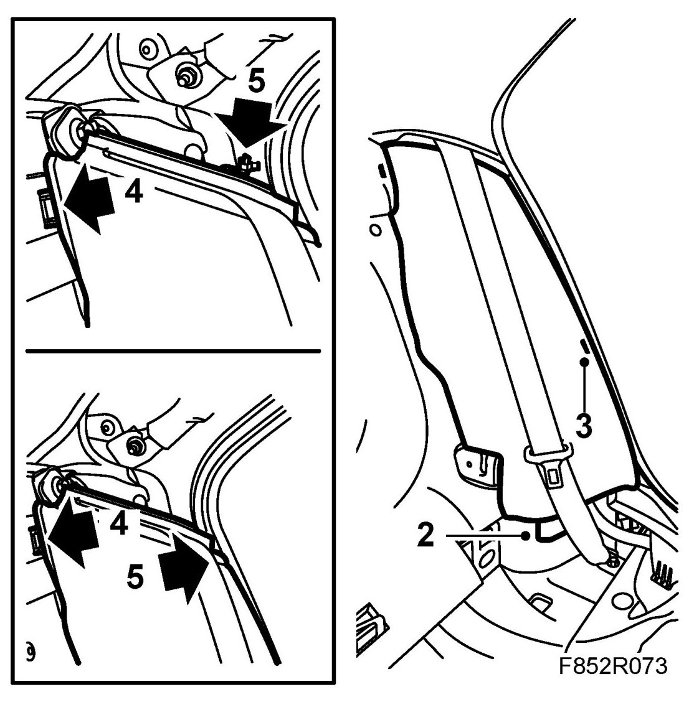

Side Bolster
Side Bolster
To remove
1. Remove the C-pillar trim.
2. Side bolster with cable tie: Cut off the cable tie.
Side bolster with clips: Remove the outer clip using 82 93 474 Removal tool

3. Remove the side bolster inner clip so it comes loose from its fastening.
4. Press back the middle part of the bolster while pressing the bolster towards the middle of the car to unhook its middle fastener.
5. Unhook the lower bolster fastener.
6. Remove the top part of the belt guide.

To fit
1. Fit the upper part of the belt guide. Make sure the seatbelt strap is not twisted.

2. Hook on the lower bolster fastening.

3. Insert the middle bolster fastener into its catch.
4. Fit the side bolster by pressing on the inner bolster clips.
5. Cars with cable tie: Fit a new cable tie.
Cars with clips: Fit the clip.
6. Check that the belt is positioned correctly and not twisted.
7. Fit the C-pillar trim.